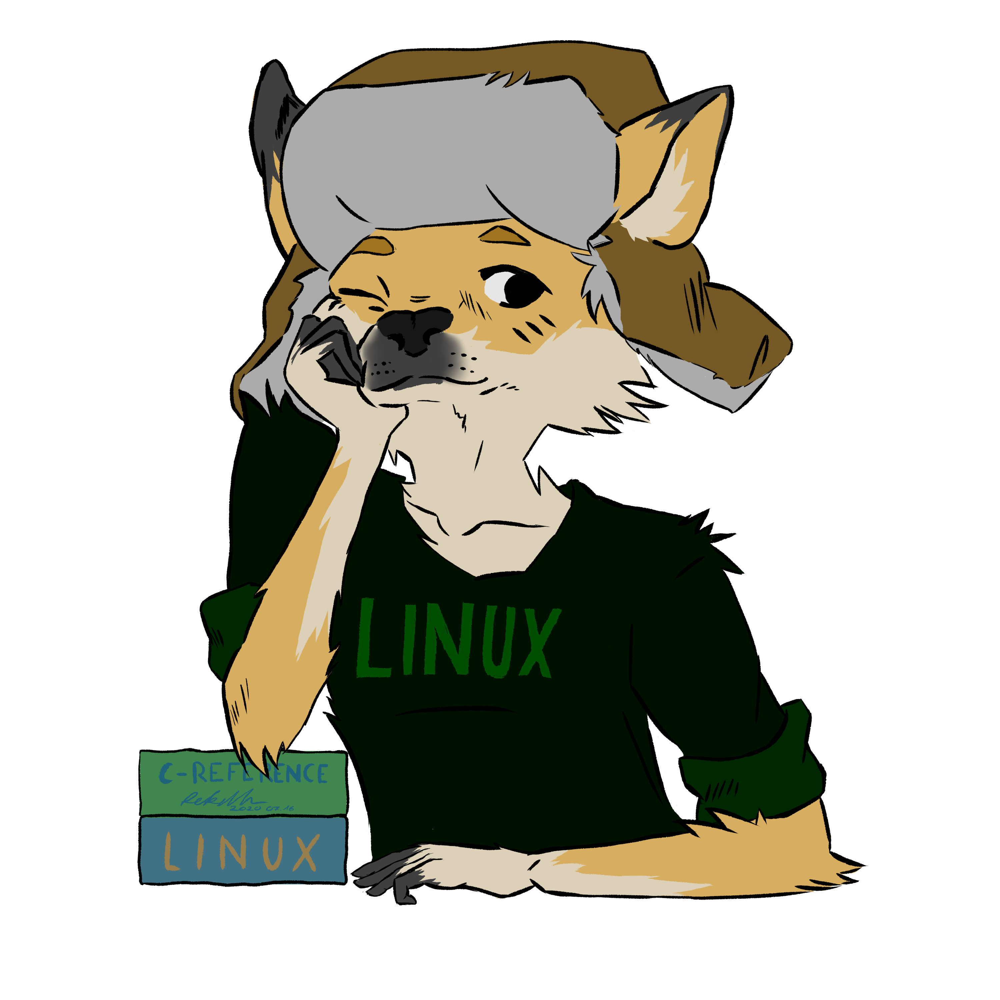

Hi I'm luna, I go by lunarequest or nullrequest. I'm 18 years old and love to code.
Important info
As I said before I love to code. my favorite langs are python
and
rust . I am an avid linux user,
I use Fedora Kinonite and Arch
linux .
I love to flatpak applications, I maintain the following flatpaks
So you heard I'm a furry and want to see my sona. I can't say no.
